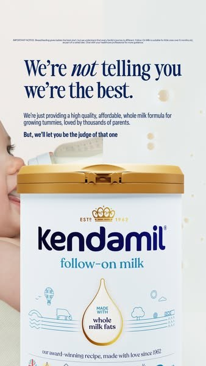

켄다밀 (영국 프리미엄 분유)
메타 광고 라이브러리 · 1월 2일, 3월 16일, 6월 1일부터 지금까지 게재 중
- 위 가운데 두 줄 제목 → 아래 제품 하나. 요소 2~3개
- 강조는 색이 아니라 한 단어의 글자 모양(기울임)으로
- 배경은 크림·연회색·짙은 남색, 강조색 거의 없음
가져온 것 — 기본안 구도. 얇은 줄 + 굵은 줄을 같은 색으로. 제목은 켄다밀보다 절반 크기로 줄였습니다(“작고 우아하게”).
광고 원본 보기 ›